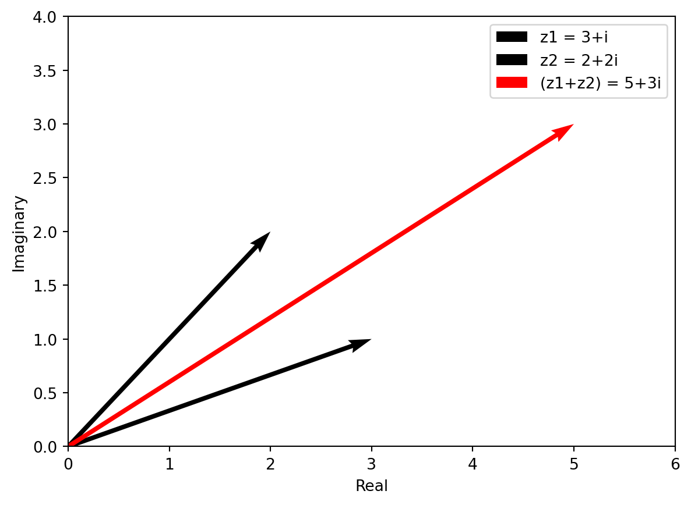
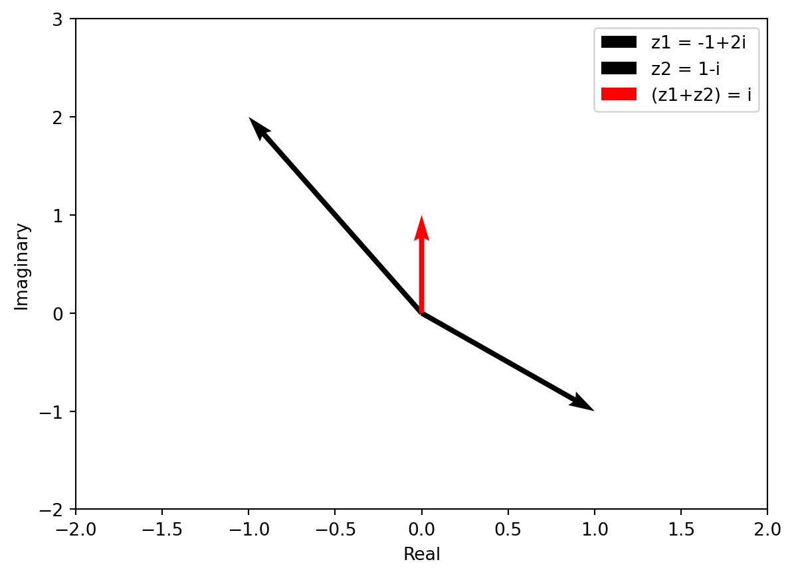
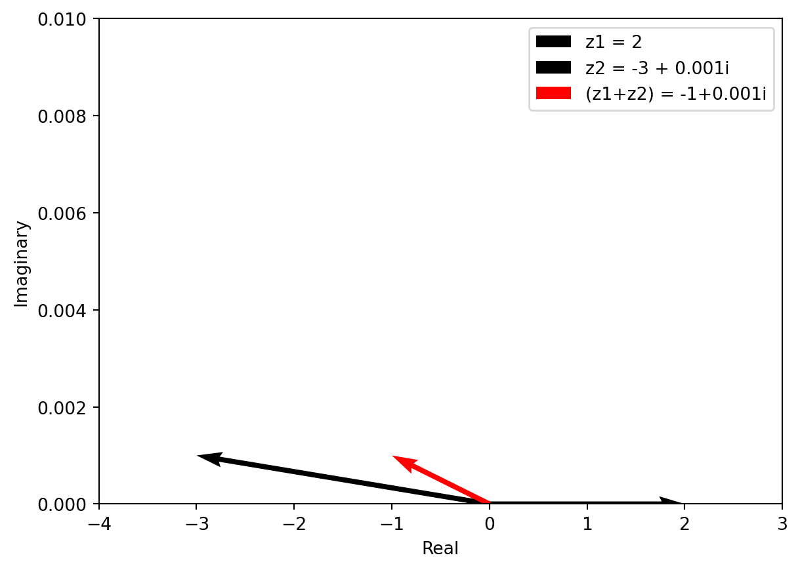
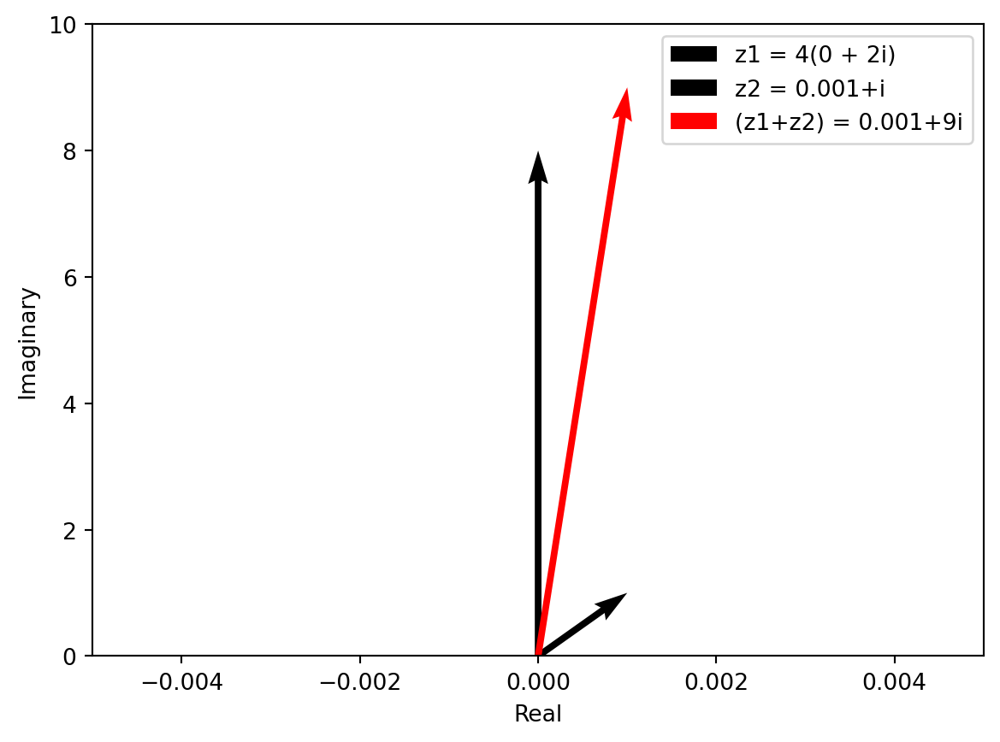
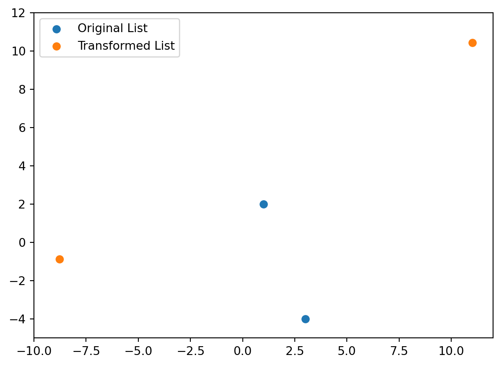
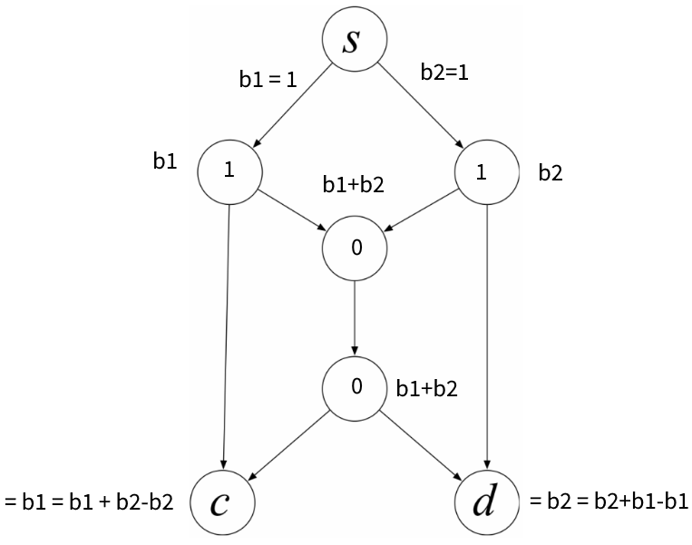

Code
[1, 5, 7]my_filter(L, num)
input: list of numbers and a positive integer
output: list of numbers not containing a multiple of num
example: given list = [1, 2, 4, 5, 7] and num = 2, return [1, 5, 7]
my_lists(L)
input: list L of non-negative integers
output: a list of lists: for every element in \(x\) in L create a list containing 1, 2,…,\(x\)
example: given [0] return [[]]
my_function_composition(f, g)
input: two functions \(f\) and \(g\), represented by dictionaries, such that \(g \circ f\) exists
output: dictionary that represents the function \(g \circ f\)
example: given \(f\) = {0:‘a’, 1:‘b’} and \(g\) = {‘a’:‘apple’, ‘b’:‘banana’}, return {0:‘apple’, 1:’banana}
mySum(L)
input: list of numbers
output: sum of numbers in the list
myProduct(L)
input: list of numbers
output: product of numbers in the list
myMin(L)
input: list of numbers
output: minimum number in list
myConcat(L)
input: list of strings
output: concatenation of all the strings in the L
myUnion(L)
input: list of sets output: the union of all sets in L
Keeping in mind the comments above, what should be the value of each of the following?
1. The sum of the numbers in an empty set
2. The product of the numbers in an empty set
3. The minimum of the numbers in an empty set
4. The concatenation of an empty list of strings
5. The union of an empty list of sets
What goes wrong when we try to apply this reasoning to define the intersection of an empty list of sets?
The sum of the numbers in an empty set should be 0.
The product of the numbers in an empty set should be 1.
The minimum of the numbers in an empty set should be \(\infty\).
The concatenation of an empty list of strings should be an empty string.
The union of an empty list of sets should be an empty set.
The problem that occurs when we try to apply this reasoning to define the intersection of an empty list of sets is that both sets are empty, so there’s nothing to intersect.
Each of the following problems asks for the sum of two complex numbers. For each, write the solution and illustrate it with a diagram like that of Figure 1.1. The arrows you draw should (roughly) correspond to the vectors being added.
a. \((3 + 1\mathbf i) + (2 + 2\mathbf i)\)
import matplotlib.pyplot as plt
# Create a list of the two complex numbers
z1 = 3 + 1j
z2 = 2 + 2j
# Plot the complex numbers as vectors on the complex plane
fig, ax = plt.subplots()
ax.quiver(0, 0, [z1.real], [z1.imag], angles='xy', scale_units='xy', scale=1)
ax.quiver(0, 0, [z2.real], [z2.imag], angles='xy', scale_units='xy', scale=1)
# Add a legend and axis labels
ax.legend(['z1 = 3+i', 'z2 = 2+2i'])
ax.set_xlabel('Real')
ax.set_ylabel('Imaginary')
# Add the sum of the complex numbers
z_sum = z1 + z2
ax.quiver(0, 0, [z_sum.real], [z_sum.imag], angles='xy', scale_units='xy', scale=1, color='r')
ax.legend(['z1 = 3+i', 'z2 = 2+2i','(z1+z2) = 5+3i'])
# Set the range of the x-axis and y-axis
ax.set_xlim(0, 6)
ax.set_ylim(0, 4)
# Show the plot
plt.show()
import matplotlib.pyplot as plt
# Create a list of the two complex numbers
z1 = -1 + 2j
z2 = 1 - 1j
# Plot the complex numbers as vectors on the complex plane
fig, ax = plt.subplots()
ax.quiver(0, 0, [z1.real], [z1.imag], angles='xy', scale_units='xy', scale=1)
ax.quiver(0, 0, [z2.real], [z2.imag], angles='xy', scale_units='xy', scale=1)
# Add a legend and axis labels
ax.legend(['z1 = -1+2i', 'z2 = 1-i'])
ax.set_xlabel('Real')
ax.set_ylabel('Imaginary')
# Add the sum of the complex numbers
z_sum = z1 + z2
ax.quiver(0, 0, [z_sum.real], [z_sum.imag], angles='xy', scale_units='xy', scale=1, color='r')
ax.legend(['z1 = -1+2i', 'z2 = 1-i','(z1+z2) = i'])
# Set the range of the x-axis and y-axis
ax.set_xlim(-2, 2)
ax.set_ylim(-2, 3)
# Show the plot
plt.show()
import matplotlib.pyplot as plt
# Create a list of the two complex numbers
z1 = 2
z2 = -3 + 0.001j
# Plot the complex numbers as vectors on the complex plane
fig, ax = plt.subplots()
ax.quiver(0, 0, [z1.real], [z1.imag], angles='xy', scale_units='xy', scale=1)
ax.quiver(0, 0, [z2.real], [z2.imag], angles='xy', scale_units='xy', scale=1)
# Add a legend and axis labels
ax.legend(['z1 = 2', 'z2 = -3+0.001i'])
ax.set_xlabel('Real')
ax.set_ylabel('Imaginary')
# Add the sum of the complex numbers
z_sum = z1 + z2
ax.quiver(0, 0, [z_sum.real], [z_sum.imag], angles='xy', scale_units='xy', scale=1, color='r')
ax.legend(['z1 = 2', 'z2 = -3 + 0.001i','(z1+z2) = -1+0.001i'])
# Set the range of the x-axis and y-axis
ax.set_xlim(-4, 3)
ax.set_ylim(0, 0.01)
# Show the plot
plt.show()
import matplotlib.pyplot as plt
# Create a list of the two complex numbers
z1 = 8j
z2 = 0.001 + 1j
# Plot the complex numbers as vectors on the complex plane
fig, ax = plt.subplots()
ax.quiver(0, 0, [z1.real], [z1.imag], angles='xy', scale_units='xy', scale=1)
ax.quiver(0, 0, [z2.real], [z2.imag], angles='xy', scale_units='xy', scale=1)
# Add a legend and axis labels
ax.legend(['z1 = 4(0 + 2i)', 'z2 = 0.001+i'])
ax.set_xlabel('Real')
ax.set_ylabel('Imaginary')
# Add the sum of the complex numbers
z_sum = z1 + z2
ax.quiver(0, 0, [z_sum.real], [z_sum.imag], angles='xy', scale_units='xy', scale=1, color='r')
ax.legend(['z1 = 4(0 + 2i)', 'z2 = 0.001+i','(z1+z2) = 0.001+9i'])
# Set the range of the x-axis and y-axis
ax.set_xlim(-0.005, 0.005)
ax.set_ylim(0, 10)
# Show the plot
plt.show()
Use the First Rule of Exponentiation (Section 1.4.9) to express the product of two exponentials as a single exponential. For example, \({e^{(\pi/4)\mathbf i}}{e^{(\pi/4)\mathbf i}}=e^{(\pi/2)\mathbf i}\).
a. \(e^{1\mathbf i}e^{2\mathbf i} = e^{-2}\)
b. \(e^{(\pi/4)\mathbf i}e^{(2\pi/3)\mathbf i} = e^{-\cfrac{\pi^2}{6}}\)
c. \(e^{-(\pi/4)\mathbf i}e^{(2\pi/3)\mathbf i} = e^{\cfrac{\pi^2}{6}}\)
Write a procedure transform(a, b, L) with the following spec:
- input: complex numbers \(a\) and \(b\), and a list \(L\) of complex numbers
- output: the list of complex numbers obtained by applying \(f(z) = \mathrm{a}z + b\) to each complex number in \(L\)
Next, for each of the following problems, explain which value to choose for a and b in order to achieve the specified transformation. If there is no way to achieve the transformation, explain.
a. Translate \(z\) one unit up and one unit to the right, then rotate ninety degrees clockwise, then scale by two.
b. Scale the real part by two and the imaginary part by three, then rotate by forty-five degrees counterclockwise, and then translate down two units and left three units.
from math import e, pi
import matplotlib.pyplot as plt
def transform(a, b, L): return [a*z + b for z in L]
L=[1+2j, 3-4j]
transformed = transform((2+3j)*(e**((pi/4)*1j)), -1-3j, L)
def plot_complex_points(complex_points, xlim=(0, 10), ylim=(0, 10)):
plt.scatter([p.real for p in complex_points], [p.imag for p in complex_points])
plt.xlim(xlim)
plt.ylim(ylim)
plot_complex_points(L, xlim=(-15, 12), ylim=(-5, 15))
plot_complex_points(transformed, xlim=(-10, 12), ylim=(-5, 12))
plt.legend(['Original List', 'Transformed List'])<matplotlib.legend.Legend at 0x22485502980>
For each of the following problems, calculate the answer over \(GF(2)\).
a. \(1 + 1 + 1 + 0\)
b. \(1 \cdot 1 + 0 \cdot 1 + 0 \cdot 0 + 1 \cdot 1\)
c. \((1 + 1 + 1) \cdot (1 + 1 + 1 + 1)\)
Copy the example network used in Section 1.5.2. Suppose the bits that need to be transmitted in a given moment are \(b_1 = 1\) and \(b_2 = 1\). Label each link of the network with the bit transmitted across it according to the network-coding scheme. Show how the customer nodes \(c\) and \(d\) can recover \(b_1\) and \(b_2\).
